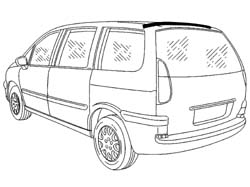
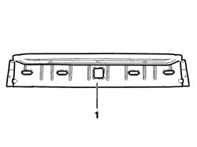
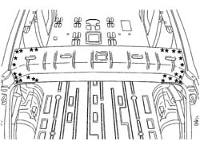
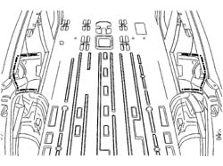
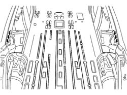

7210L88 R R REAR ROOF PANEL BEAM
- Path
- Procedures > 72 PANELS AND FRAME > 7210 REMOVING REFITTING > 7210L SPECIFIC PARTS FOR COMMERCIAL VEHICLE > 7210L88 R R REAR ROOF PANEL BEAM
- Kind
- repair procedure (removal / refitting; the operation number is the code)
- Applies to
- all engines; all production periods
- Interactive page
- https://sloeber94.github.io/elrnDB-fUlss/en/#/179007981
Applies to: all engines; all production periods
Applies to: all engines; all production periods
 Removing
Removing
 Refitting
Refitting- Work on the component highlighted previously making sure that the equipment illustrated below is available:

Applies to: all engines; all production periods
1. Assembled roof panel rear crossmember

Applies to: all engines; all production periods
- Check that the components connected are not distorted by checking the bodyshell alignment measurements using suitable equipment (gauges, templates or jigs).
- Remove the spot welds shown in the diagram using a chamfering machine.
- Detach the crossmember.

Applies to: all engines; all production periods
- Prepare the edges to be welded and protect them using thermoweldable primer

Applies to: all engines; all production periods
- Apply sealing compound along the lines illustrated in the diagram.

Applies to: all engines; all production periods
Refitting
Removing- Position the front crossmember and the roof panel and fasten using self-locking clamps then, after having checked that the alignment and clearances are correct, remove the roof panel and proceed as described below.
- Using a spot welder, carry out the welding illustrated in the diagram then grind the welds using a disc grinder.
Applies to: all engines; all production periods
- Check that the welded component is correctly positioned.
- Apply electro-galvanizing paint to the ground parts.
- Proceed with waxing the box sections.